Измерение в кадре
Температурная шкала, точка измерения и экстремумы рядом с изображением.
04 / Инфракрасное устройство · Embedded UI
Спроектировал интерфейс измерения и съёмки: от Live View и быстрых настроек до работы со снимками и восстановления после сбоя.
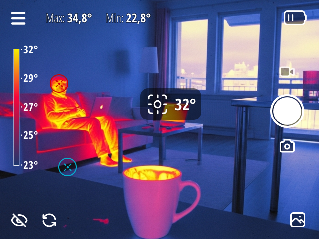
Задача / интерфейс поверх наблюдаемой сцены
Нужно видеть сцену, понимать текущий режим, считывать температуру и сохранять результат. При этом значительная часть управления привязана к кнопкам устройства.
Я разделил интерфейс на три уровня: постоянные данные в Live View, быстрые настройки поверх сцены и отдельные экраны для файлов и системных состояний. Так каждое действие получает свой контекст, не превращая основной экран в панель всех настроек сразу.
Температурная шкала, точка измерения и экстремумы рядом с изображением.
Быстрые настройки и подсказка текущих назначений физических кнопок.
Галерея, сохранение, предупреждения и отдельные сценарии восстановления.
01 / Live View
Температурную шкалу расположил слева, съёмку — справа, измерение в точке — в центральной области. Минимум и максимум вынес в верхнюю строку.
Цветной и монохромный варианты используют одну схему размещения. При смене представления человеку не приходится заново искать управление.
Значения на изображениях иллюстрируют компоновку, а не подтверждают точность измерений.
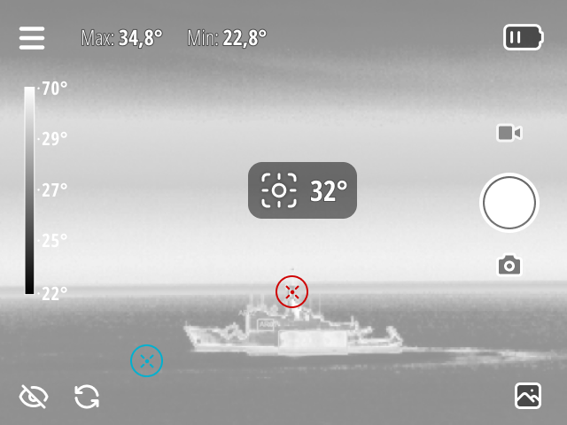
02 / Управление без ухода из сцены
Для режимных действий я предусмотрел краткую подсказку назначений кнопок: палитра, снимок, переход. Для более подробной настройки — быстрое меню поверх Live View.
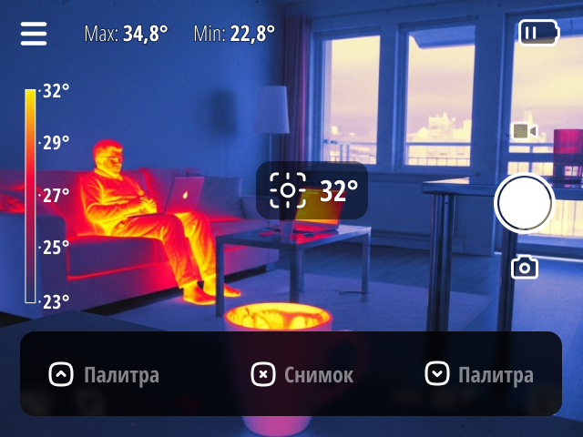
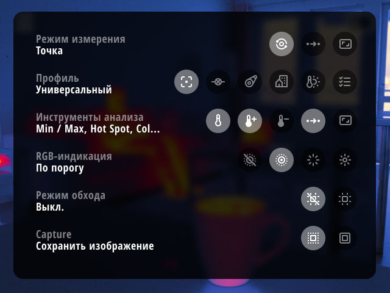
Я показываю не только доступные команды, но и текущую конфигурацию: «Точка», «Универсальный», «По порогу». Пользователю важно знать, как прибор работает сейчас.
В главном меню разделил галерею, измерения, отображение, настройки, сервис и сведения о приборе. Это отдельный уровень навигации, а не продолжение перегруженного Live View.
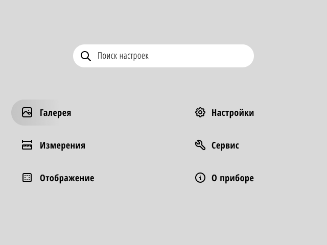
03 / Работа с результатом
Галерею спроектировал как отдельное рабочее пространство: превью, время съёмки, выбор даты и поиск. Детальный просмотр возвращает изображению почти всю площадь экрана.
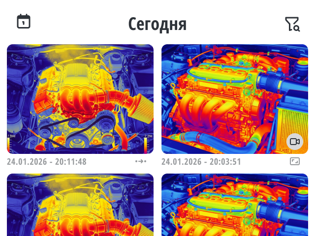
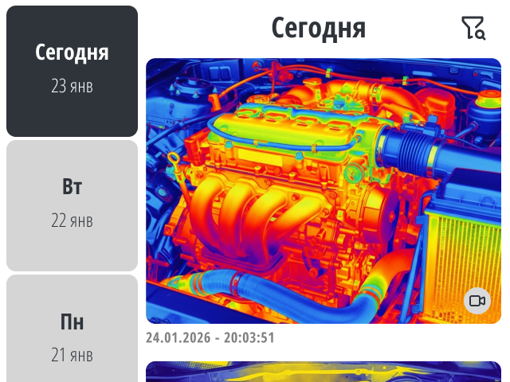
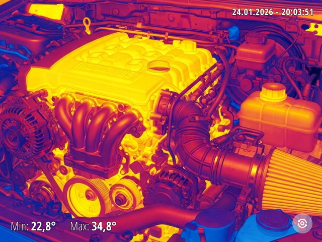
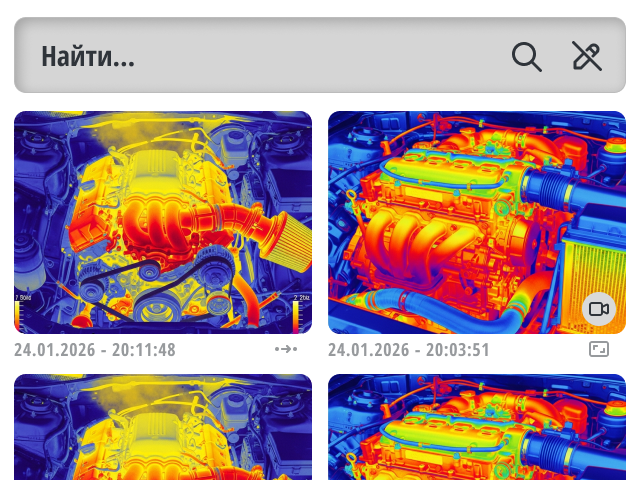
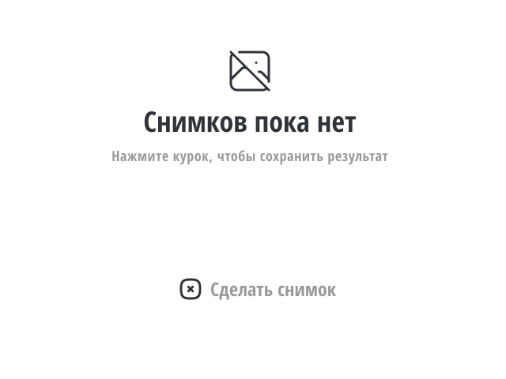
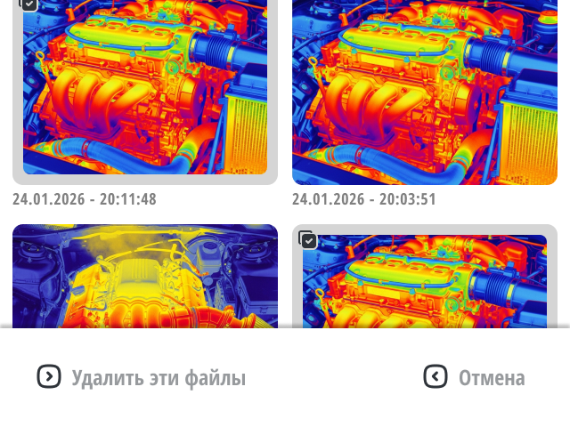
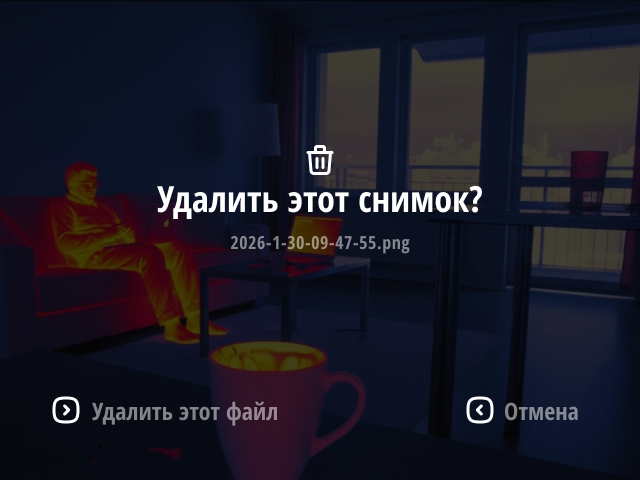
04 / Состояния, которые меняют действие
Это не три формулировки одной ошибки. Предупреждение оставляет время подготовиться. Нехватка памяти мешает новому сохранению. Сбой сохранения требует отдельной попытки.
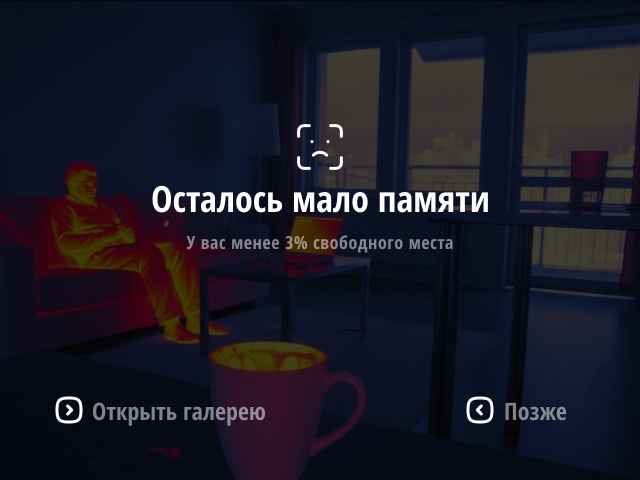
«Открыть галерею» связывает проблему с местом, где можно разобрать файлы. «Позже» позволяет отложить действие.
Порог 3% показан в макете. Его достаточность зависит от размера снимков и требует технической проверки.
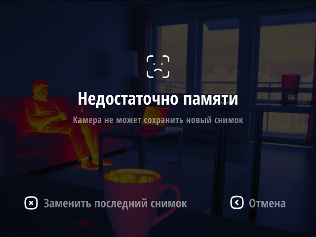
Сообщение прямо говорит: камера не может сохранить новый снимок. В макете предложены замена последнего файла и отмена.
Замена уничтожает прежний результат. Перед реализацией для неё нужно отдельно проверить подтверждение и защиту от случайного нажатия.
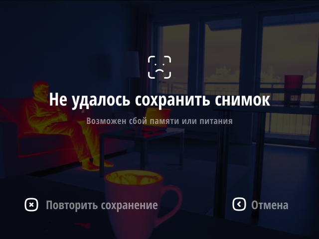
Причина сформулирована как возможный сбой памяти или питания. Действие относится к сохранению, а не к новому кадру.
В реализации необходимо согласовать, сколько времени кадр остаётся доступен для повторной записи.
Ключевой принцип: «кадр получен» и «результат сохранён» — разные состояния. Интерфейс не должен создавать ложную уверенность, что данные уже записаны.
05 / Прибор занят или работа прервана?
Калибровка просит не двигать камеру. Перегрев объясняет охлаждение. Системная ошибка сообщает, что измерения недоступны. Эти состояния нельзя подменять универсальным «что-то пошло не так».
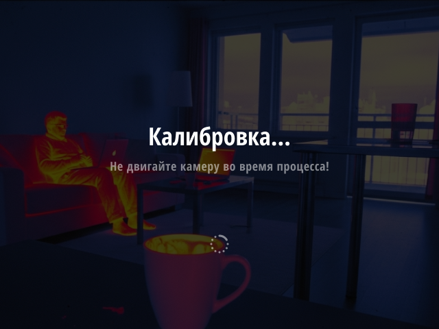
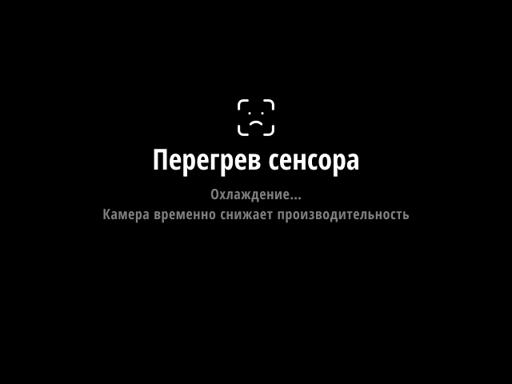
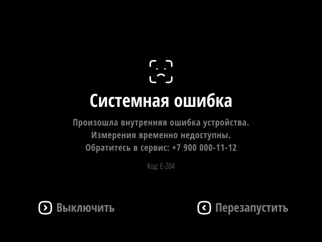
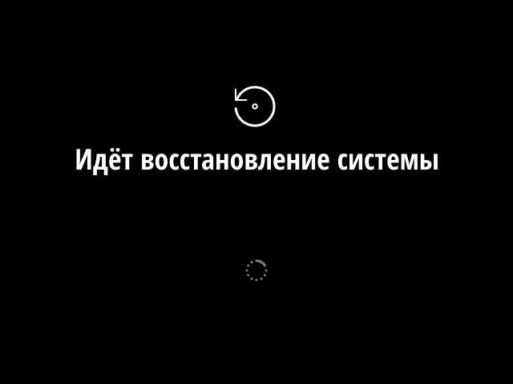
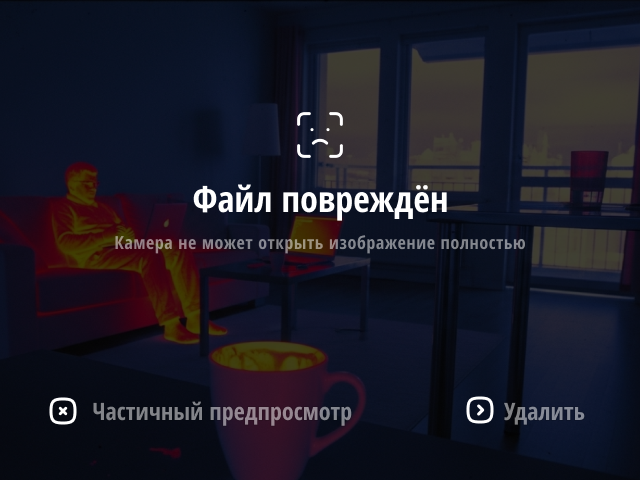
06 / Завершение и необратимые действия
Автоотключение показывает обратный отсчёт прямо поверх сцены. Ручное выключение запрашивает подтверждение, затем переходит в состояние завершения работы.
Сброс к заводским настройкам — другой уровень риска: сообщение отдельно предупреждает о потере данных. Эти действия не должны выглядеть как обычное переключение режима.
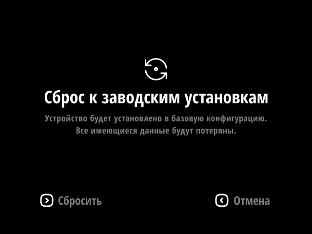
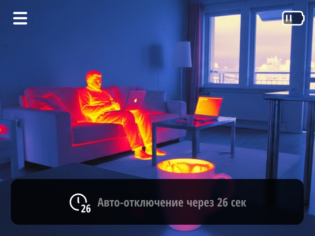
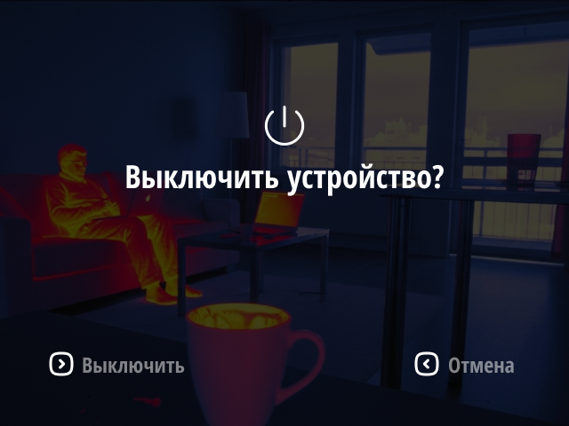
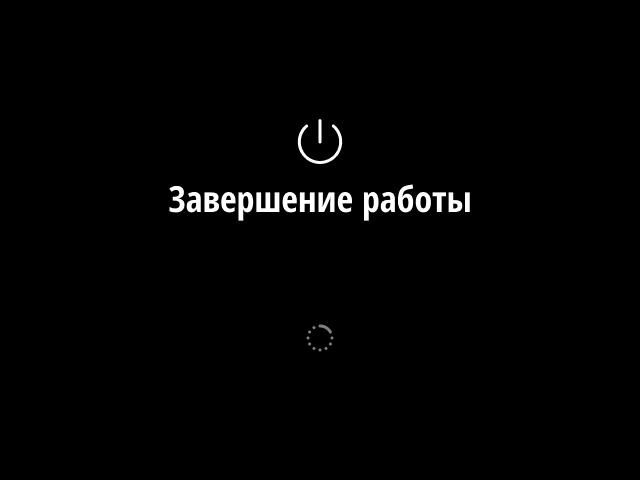
Итог / не только штатный сценарий
Я связал измерение, быстрые настройки, работу с файлами и системные исключения в одной логике управления. Важен не набор экранов сам по себе, а разница между «можно продолжать», «нужно действие» и «нужно ждать».
Кейс показывает проектирование интерфейса. Модель устройства, аппаратная платформа, результаты испытаний и внедрения здесь не заявлены.
Продолжить знакомство
Ещё проект: спортивная платформа RuChamp ↗